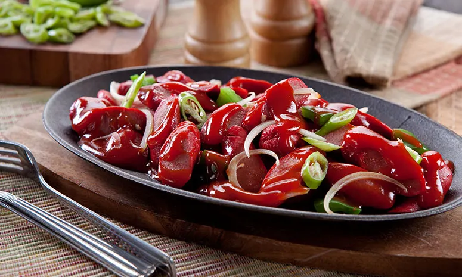

Sizzling Hotdog recipe
Sizzling Hotdog
Home

Description
Sizzling hotdog is a popular Filipino appetizer (pulutan) or main dish (ulam) made by pan-frying hotdogs—often sliced diagonally—and tossing them in a savory, sweet, and spicy sauce of ketchup, butter, soy sauce, and chilies. It is typically served on a hot sizzling plate, garnished with onions and extra green chilies for a caramelized, smoky flavo
Ingredients
- 2 Tbsp soy sauce
- 1 cup DEL MONTE Sweet Blend Ketchup (320g)
- 1 Tbsp hot sauce, optional
- 2 Tbsp oil
- 500 g hotdog, sliced diagonally
- 1/2 cup onion, thinly sliced
- 1/2 cup bell pepper, cut into chunks
- 1/3 cup margarine
- 2 pc siling haba, sliced diagonally
Steps
- Mix soy sauce, DEL MONTE Sweet Blend Ketchup and hot sauce in a bowl. Set aside.
- In a pan, sauté hotdog in oil for 1 minute. Add onion and bell pepper and sauté for another 2 minutes.
- Pour the sauce mixture and mix with hotdog, then add margarine. Pour in sizzling plate, garnish with siling haba.